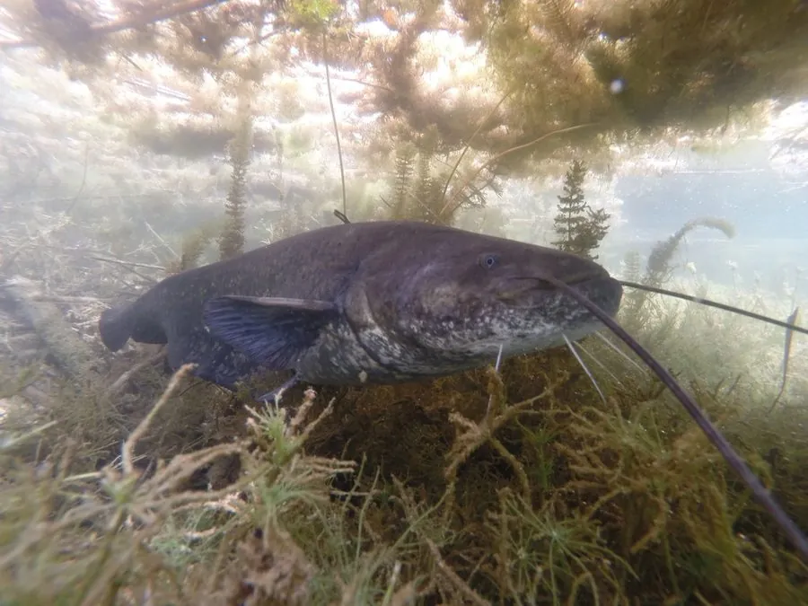

鱼类 · 动物界
欧洲巨鲶 Silurus glanis

欧洲最大的淡水鱼，体长可达 2.7 m、体重超过 100 kg，口大须长，是河流中的顶级捕食者，也被用于游钓。
- 分类
- 门脊索动物门纲辐鳍鱼纲目鲇形目科鲇科属鲇属
- 栖息环境
- 欧洲和西亚的大型河流、湖泊和水库，喜欢深水与沉木环境
- 地理分布
- 欧洲中部和东部、西亚的河流与湖泊，从莱茵河到伏尔加河
- 保护级别
- IUCN 无危（LC）；中国未列入国家重点保护野生动物名录
物种志
欧洲巨鲶体呈长圆筒形，头部宽大，口裂宽，口周有 6 根须，其中下颌须较长。体表无鳞，皮肤光滑，体色灰褐、橄榄褐或黑褐色，腹部浅黄，身上常有深色斑驳。成鱼体长一般 1.5–2 m，最大可达 2.7 m，体重可超过 130 kg，是欧洲最大的淡水鱼。
欧洲巨鲶分布于欧洲中部和东部、西亚的河流、湖泊和水库，从莱茵河、多瑙河到伏尔加河和咸海流域。它栖息在水深、底质复杂的河段，白天多藏在深坑或沉木下，夜间捕食，吃鱼类、两栖类、水鸟、甲壳类，甚至小型哺乳动物。欧洲巨鲶生长快、寿命长，可活 50 年以上。它是游钓爱好者追捧的大型鱼种，也被引入西班牙、意大利等地。目前 IUCN 评估为无危。
形态与习性
- 食性鱼类、两栖类、水鸟、甲壳类和小型哺乳动物
- 体长一般 1.5–2 m，最大可达 2.7 m
- 体重最大可超过 130 kg
- 寿命可达 50 年以上
- 触须口周有 6 根须，下颌须较长
- 活动节律白天藏在深坑或沉木下，夜间捕食
趣味知识
- 欧洲巨鲶是欧洲最大的淡水鱼，最大个体可超过 130 kg。
- 它口周长着 6 根须，像雷达一样探测水中的猎物。
- 欧洲巨鲶寿命可超过 50 年，是游钓爱好者追捧的巨型鱼。